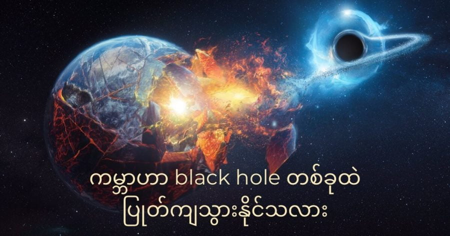

Black hole တွင်းနက် ဆိုတာက အာကာသထဲမှာ ရှိတဲ့ တွင်းကို ပြောတာ မဟုတ်ပါဘူး။ အလွန် ကြီးမားတဲ့ ဒြပ်ဝတ္ထု တွေ အရမ်းကို သိပ်သည်းသွားပြီးနောက် ကြီးမားတဲ့ ဆွဲငင်အားကြောင့် အရာဝတ္ထု တွေကို မလွတ်တမ်း ဖမ်းဆွဲထား နိုင်တဲ့ ရပ်ဝန်း တစ်ခုကို ခေါ်ဆိုတာ ဖြစ်ပါတယ်။ သူ့ရဲ့ ဆွဲငင်အားက ပြင်းထန်လွန်း တာမို့ အလင်းတောင်မှ လွတ်ထွက် မသွားအောင် ဆွဲထား နိုင်ပါတယ်။
တွင်းနက်ရဲ့ နှုတ်ခမ်းဝ အရောက်မှာ အချိန်ဟာ ရပ်တန့် သွားပါတယ်။ တွင်းနက်ရဲ့ ဗဟိုမှာ ရှိတဲ့ ဒြပ်ထုဟာ ဆိုရင်လဲ ထုထည် အားဖြင့် အလွန် အင်မတန် သေးငယ်ပြီး သိပ်သည်းဆ ကတော့ အနှိုင်းမဲ့ လောက်အောင် ကြီးမား နေပါတယ်။
တွင်းနက်ရဲ့ နှုတ်ခမ်းဝကို ကျော်သွားတဲ့ နောက်မှာ ကျွန်တော်တို့ အခု သိနေတဲ့၊ သင်ကြား ခဲ့ရတဲ့၊ လေ့လာ မှတ်သားခဲ့ ရတဲ့ ရူပဗေဒ နိယာမတွေ အားလုံး ပြိုကွဲ ပျက်စီး သွားပါတယ်။
စကြာဝဠာ ထဲမှာ အခုထိ တွင်းနက်ပေါင်း အမြောက်အများကို ရှာဖွေ တွေ့ရှိ ထားပါတယ်။ တွင်းနက်တွေကို အလွယ်တကူ မမြင်နိုင် တာမို့ သူတို့ကို ရှာဖွေရတာက ထင်သလောက်တော့ မလွယ် လှပါဘူး။ ပညာရှင် တွေကတော့ တွင်းနက် အရေအတွက်ဟာ အခုထိ ရှာတွေ့ခဲ့သမျှ တွင်းနက်တွေထွက် အဆများစွာ ပိုမယ်လို့ ခန့်မှန်း ကြပါတယ်။
ဆက်စပ်ဆောင်းပါး – Black Hole တွင်းနက်ကြီး ဆိုတာဘာလဲ
ကျွန်တော်တို့ မစ်ကီးဝေး ဂလက်ဆီ ကြီးထဲမှာလဲ တွင်းနက်တွေ အများအပြား ရှိပါတယ်။ ဒီနေရာမှာ မေးစရာ ရှိလာတာက ဒီလောက် တွင်းနက်တွေ အများကြီး ရှိနေတာမို့ ဒီ တွင်းနက်တွေ ထဲက တစ်ခုခုဟာ ကမ္ဘာပါတ် လမ်းကြောင်းနား ကပ်လာပြီး ကမ္ဘာကြီး ကို ဝါးမြိုသွားတာမျိုး မဖြစ်နိုင်ဘူးလား လို့ မေးစရာ ရှိလာပါတယ်။
နက္ခတ် ပညာရှင်တွေကတော့ ဘာမှ စိတ်မပူ ပါနဲ့လို့ ပြောကြပါတယ်။ အာကာသ တွင်းနက်တွေဟာ ကမ္ဘာကို လာပြီး ဝါးမြိုသွားမှာ မဟုတ်သလို ကျွန်တော်တို့ရဲ့ နေ အဖွဲ့အစည်း (သို့) မစ်ကီးဝေး ဂလက်ဆီ ကြီးကိုလဲ ဝါးမြိုသွားမှာ မဟုတ်ပါဘူးတဲ့။
ဘာ့ကြောင့် နက္ခတ် ပညာရှင် တွေက ဒီလို အသေအခြာ ပြောနိုင် ရတာလဲ ဆိုတော့ ဒီ တွင်းနက်တွေဟာ ကမ္ဘာကနေ အရမ်း အလှမ်း ကွာဝေးတာကြောင့် မို့ပါ။ ဒီလောက် အကွာအဝေးမှာ သူတို့ရဲ့ ဆွဲငင်အားက မပြောပလောက်တဲ့ ပမာဏပဲ ရှိပါတော့တယ်။
ဒီ တွင်းနက်တွေက ကျွန်တော်တို့ ကမ္ဘာပေါ်ကို သက်ရောက်တဲ့ ဆွဲငင်အားဟာ ကောင်းကင်က ကြယ်တွေက ကမ္ဘာကို သက်ရောက်တဲ့ အားနဲ့ အတူတူပဲ ရှိပါတယ်။
ဆက်စပ်ဆောင််းပါး – Black Hole ထဲကို လူတွေဝင်ပြီး လေ့လာနိုင်မလား
ဒါနဲ့ နေပါအုံး။ တွင်းနက်ဆိုတာက ကြယ်တွေ သေပြီး ဖြစ်လာတာဆို။ ဒီတော့ ကျွန်တော်တို့ရဲ့ နေ ရုတ်တရက် တွင်းနက်အဖြစ် ပြောင်းသွားမယ် ဆိုရင်ရော၊ ကမ္ဘာကို ဝါးသွားမှာလားဗျာ။
နက္ခတ် ပညာရှင် တွေကတော့ ဒါမျိုး ဖြစ်လာဖို့ မဖြစ်နိုင်ဘူးလို့ ဆိုပါတယ်။ ပထမ အချက် အနေနဲ့က ကျွန်တော်တို့ရဲ့ နေဟာ အရွယ်အစားအားဖြင့် သေးငယ်တာမို့ နေ သေဆုံး သွားခဲ့ရင် တွင်းနက် အဖြစ် ပြောင်းမသွားပဲ White Dwarf လို့ ခေါ်တဲ့ ကြယ်ဖြူပု ကလေး အဖြစ် ကူးပြောင်းသွားမှာ ဖြစ်လို့ပါ။
အကယ်လို့ နေဟာ တွင်းနက် အဖြစ် ပြောင်းသွားလဲ ဘာမှတော့ စိုးရိမ်စရာ မရှိပါဘူး။ ဘာကြောင့်ဆို နေကသာ တွင်းနက် ဖြစ်သွားခဲ့ရင်လဲ ဒီတွင်းနက်ရဲ့ ဒြပ်ထု ပမာဏ ဟာ အခု နေရဲ့ ဒြပ်ထု ပမာဏနဲ့ အတူတူပဲ ဖြစ်နေ အုံးမှာ မို့ပါ။ ဒြပ်ထု ပမာဏ အတူတူ ပဲမို့ ဆွဲငင်အား သက်ရောက်မှု ကလဲ အတူတူပဲ ဖြစ်ပါလိမ့်မယ်။
ဆွဲငင်အားက အတူတူ ပဲမို့ လက်ရှိ နေကို လှည့်ပတ်နေတဲ့ ဂြိုဟ်တွေ အားလုံးဟာလဲ တွင်းနက် ဖြစ်သွားတဲ့ အချိန်မှာလဲ မူလ အတိုင်း ဆက်ပြီး လှည့်ပတ်နေ အုံးမှာပဲ ဖြစ်ပါတယ်။
ဆက်စပ်ဆောင်းပါး – အာကာသတွင်းနက်ကြီး အစားခံလိုက်ရတဲ့ကြယ်
ပြောင်းလဲသွားမှာ တစ်ခုကတော့ ဖြစ်လာမယ့် တွင်းနက်ဟာ ယခု နေလိုတော့ အလင်းရောင် ထုတ်လွှတ်ပေး နိုင်မှာ မဟုတ်ပါဘူး။ ဒါ့ကြောင့် နေ အဖွဲ့အစည်းကြီး တစ်ခုလုံးဟာ မှောင်မဲ အေးခဲ သွားမှာ ဖြစ်ပါတယ်။
ကမ္ဘာကြီးက တွင်းနက်ကြီးရဲ့ ဝါးမြိုခြင်း ခံရနိုင်မယ့် တခုတည်းသော နည်းလမ်းကတော့ ကမ္ဘာဟာ စကြာဝဠာထဲ လွင့်မြောနေတဲ့ တွင်းနက် တစ်ခုခုရဲ့ သွားရာ လမ်းကြောင်းထဲ ရောက်ရှိ သွားတဲ့ အချိန်ပဲ ဖြစ်ပါလိမ့်မယ်။
ဒါပေမယ့် ဒီလို လွင့်မြောနေတဲ့ တွင်းနက် တစ်ခု အနား ရောက်ရှိသွားဖို့ ဆိုတော အတော်လေးတော့ ဖြစ်နိုင်ဖို့ ခဲယဉ်းပါတယ်။ နက္ခတ် ပညာရှင် တွေကတော့ ဒီလို ဖြစ်လာဖို့ ဖြစ်နိုင်ခြေ မရှိသလောက်မို့ ဘာမှ စိတ်ပူစရာ မရှိပါဘူးလို့ ဆိုကြပါတယ်။
Reference: Could Earth be swallowed by a black hole? | BBC Sky and Night Magazine
ကမ္ဘာဟာ black hole တခုရဲ့ ဝါးမြိုခြင်း ခံရနိုင်သလား

March 21, 2022
Other Posts
- ကျွန်တော်တို့ဟာ အသိဉာဏ် နဲနဲ ပိုမြင့်တဲ့ မျောက်တွေပါ
- နေနောက်ခံနဲ့ ပုန်းနေတဲ့ အပြည်ပြည် ဆိုင်ရာ အာကာသစခန်း
- နာဆာက Black Hole ၂၂ ခုရဲ့ ဗီဒီယို ထုတ်ပြန်
- ဆလိုဗက် နိုင်ငံထုတ် ၁၅၅မမ Zuzana 2 ယာဉ်တင် ဟောင်ဝစ်ဇာ
- အောက်ဆီဂျင် ကုန်ခမ်းသွားပြီး ကမ္ဘာပေါ်က သက်ရှိတွေ ကွယ်ပျောက်သွားမယ်လို့ သိပ္ပံပညာရှင်များက ဟောကိန်းထုတ်
- Zumwalt Class ကိုယ်ပျောက် စစ်သင်္ဘော
- နောက်တကြိမ် ပြန်မြင်တွေ့ရမယ့် ဆူပါနိုဗာ ကြယ်ပေါက်ကွဲ မှုကြီး
- မစ်ကီးဝေး ဗဟိုက ထူးဆန်းတဲ့ ကြိုးမျှင်များ
- အီဂျစ် မရဏကျမ်း ပုရပိုက် အပြည့်အစုံ ရှာဖွေတွေ့ရှိ
- အာကာသဟာ ဘယ်လောက် မှောင်သလဲ